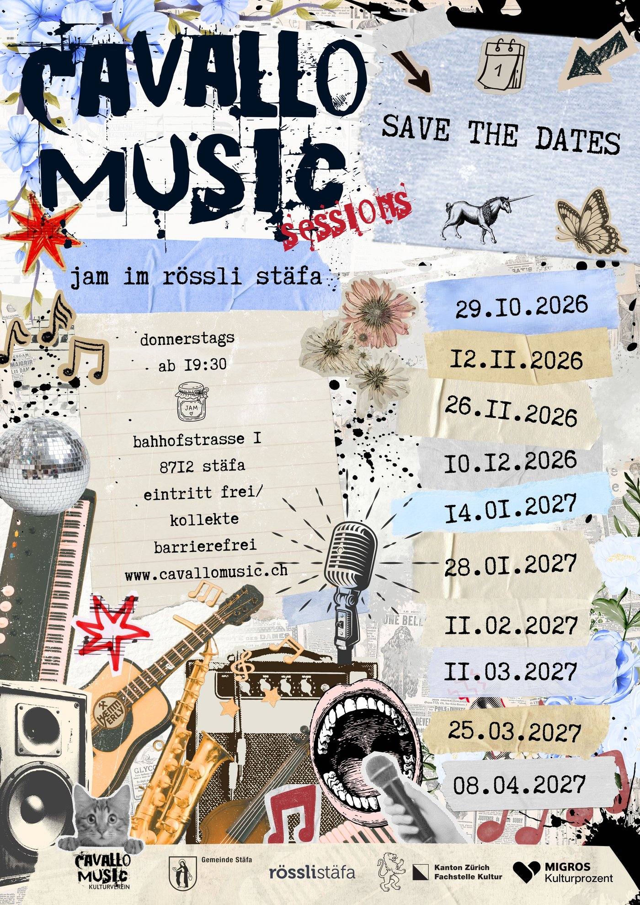
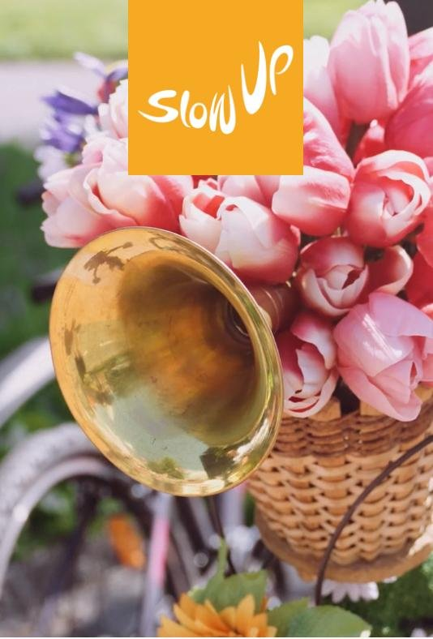

SLOW UP
Ort: Seestrasse 89, Stäfa (GWS)
Live Band: Horse Sweat and Tears
Bar: Erfrischungen und Getränke verfügbar
Save the Dates - 14. Cavallo Music Saison
Start: Donnerstag, 29. Oktober 2026
Ort: Rössli Stäfa, Bahnhofstrasse 1, 8712 Stäfa
Barrierefrei: Zugang mit Lift vorhanden
Programm:
Bar: 19:30
Konzerte: 20:00
Jam: 21:00

Über Cavallo Music
Der Kulturverein Cavallo Music organisiert seit über 14 Jahren regelmässige Jam Sessions und Konzerte in Stäfa am Zürichsee. Wir bieten eine Plattform für Musikerinnen und Musiker aller Stilrichtungen und fördern den kulturellen Austausch in unserer Region.
Jeden Donnerstag während der Saison treffen sich Musikbegeisterte zum gemeinsamen Musizieren. Alle sind willkommen - vom Amateur bis zum Profi!
Impressionen



Weitere Fotos findest du auf unserer Facebook-Seite